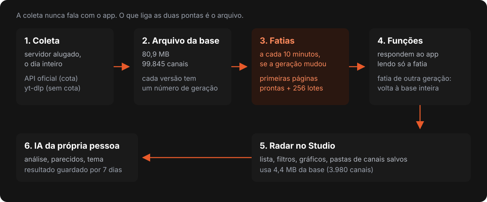
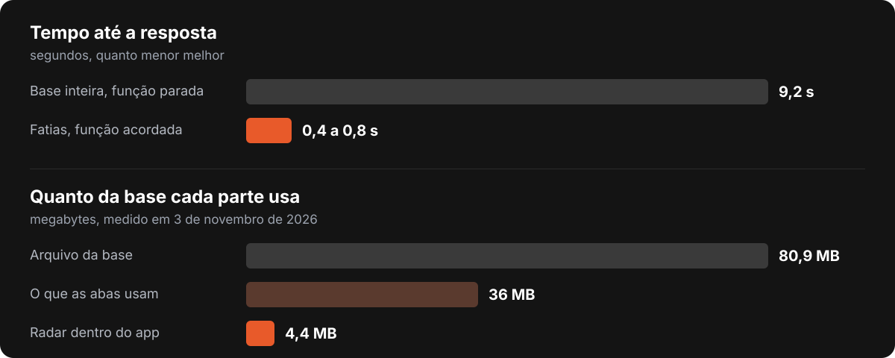
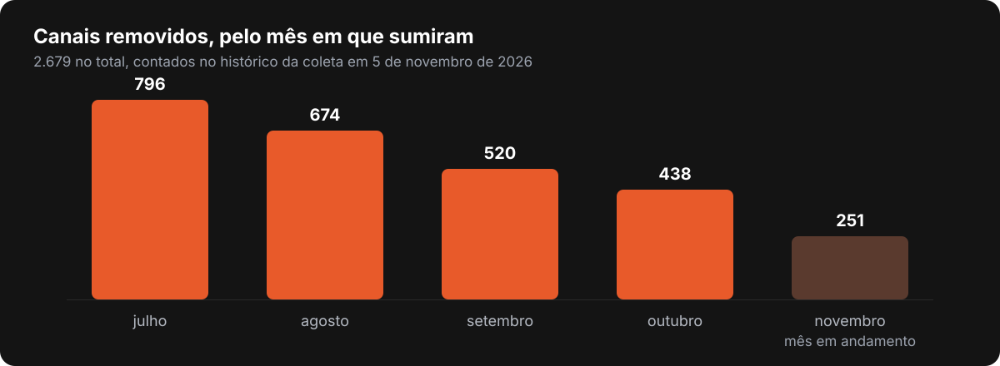

Nardoto
NardotoRadar de Nichos: como foi construído e o que quebrou
A construção do Radar de Nichos em 20 dias: de onde vêm os canais, por que a base foi fatiada, quem paga a IA e os problemas que apareceram pelo caminho.

O Radar de Nichos é a parte do Nardoto Studio que procura canais novos do YouTube crescendo rápido, para quem quer escolher um assunto antes de produzir. Já contei como os canais salvos são organizados e por que a decisão continua sendo de quem cria. Este post é sobre a construção: de onde vêm os dados, como chegam à tela e a lista do que quebrou no caminho.
O primeiro commit do Radar dentro do Studio é de 29 de outubro de 2026 (commit é cada alteração registrada no histórico do código). Vinte dias depois, o tamanho é este.
O que o código diz hoje (17/11/2026)
- 126 commits tocaram arquivos do Radar desde 29/10/2026.
- 15.038 linhas de código no app, sem contar testes: 10.445 na tela, 1.260 em serviços, 1.020 na ponte com o sistema e 2.313 em scripts.
- 446 casos de teste em 74 arquivos.
Uma ressalva antes de continuar. O código do servidor e da coleta fica em outros repositórios. Os números dessas partes vêm das anotações feitas na época de cada conserto, não de uma medição nova.
O desenho: quem coleta, quem serve, quem pensa
O Radar tem três peças, e cada uma existe por causa de um limite.
A primeira é a coleta. Um servidor alugado roda o dia inteiro perguntando ao YouTube quais canais existem e quanto cresceram. Ele usa a API oficial e também o yt-dlp, uma ferramenta de código aberto que lê as páginas públicas. A API cobra em cota: uma busca custa 100 unidades, enquanto ler os números de um lote de canais custa 1. Por isso a busca pela API ficou com a menor fatia da cota (caiu de 25% para 12%) e a descoberta passou para o yt-dlp, que acha mais canais por busca e não gasta cota.
A segunda é o arquivo da base. A coleta grava tudo num único arquivo, e pequenas funções na nuvem respondem às perguntas do app lendo esse arquivo. Elas conferem a geração do arquivo a cada consulta, então dado novo não exige publicar código de novo.
A terceira é a inteligência artificial, e aqui a decisão foi de custo. A análise de um canal, a conferência dos canais parecidos e a busca por tema rodam na IA que a própria pessoa já tem conectada no Studio. O servidor só entrega o pedido pronto e guarda o resultado por 7 dias. Pôr uma chave de IA minha no servidor, pagando por cada clique de cada pessoa, cresceria sem controle.

A base que cresceu até travar
Em 3 de novembro medi o arquivo da base: 80,9 MB, com 99.845 canais. O comentário no código ainda falava em 31 MB. Cada função que acordava depois de um tempo parada baixava, lia e preparava o arquivo inteiro, e isso levava cerca de 9,2 segundos antes de responder qualquer coisa.
O desperdício estava nos números. Dos 80,9 MB, só 36 MB interessavam às abas, e o Radar dentro do app usava 4,4 MB, o equivalente a 3.980 canais. A correção foi fatiar: a primeira página de cada aba já pronta, um arquivo só para o Radar do app e o restante dividido em 256 lotes pelo identificador do canal. Depois disso, as consultas com a função já acordada ficaram entre 0,4 e 0,8 segundo.
Duas coisas deram errado na fatiagem. O plano era disparar o fatiamento sempre que o arquivo mudasse, mas o gatilho não funcionou no tipo de armazenamento usado. Virou uma tarefa agendada a cada 10 minutos, que só trabalha quando a geração muda. E havia o risco de servir fatia velha: a função só usa a fatia se ela for da mesma geração do arquivo. Se não for, volta para a base inteira. Lento, mas nunca desatualizado.

Os canais que somem
A API do YouTube não avisa quando um canal é encerrado. Ela simplesmente deixa de devolver aquele canal no lote, sem erro. A regra que ficou: se o lote deu certo e o canal não veio, conta uma falta. Duas faltas seguidas, o canal é marcado como removido. Se voltar, a contagem zera. O registro e o histórico nunca são apagados.
Rodando essa regra sobre o histórico, apareceram 2.679 canais removidos entre julho e novembro. Conferi três deles na página pública e os três tinham sido encerrados por violar as regras da plataforma.
O detalhe que quase passou: as imagens de um canal encerrado saem do ar em menos de dois dias. A logo passa a dar erro, e a miniatura do vídeo vem como uma imagem cinza de 1 KB, com cara de arquivo válido. Por isso a coleta agora copia a logo e as miniaturas dos canais novos a cada rodada, 1.500 canais por vez. Dos já removidos, 183 ainda tinham a logo no ar e foram resgatados. Na tela, a capa do canal removido some, mas o título e os números ficam como registro.

A lista do que quebrou
Os problemas menores foram muitos. Estes são os que deixaram regra no código.
| Sintoma | Causa | Correção |
|---|---|---|
| Busca lenta por tema | Um processo do yt-dlp por busca: 3,5 s cada | 6 buscas por processo, 4 processos: 1,5 s cada |
| Logos sumindo na análise | Com 20 concorrentes, o servidor de imagens recusava os pedidos. A logo original tem até 2.560 pixels e cerca de 2 MB | Pedir a versão de 88 pixels |
| Legendas recusadas | Pedir vários idiomas de uma vez estourava o limite de pedidos | Pedir só o idioma original |
| Análise sem formato | Com 30 mil caracteres, o pedido à IA era cortado e ela não recebia as instruções finais | Enviar por outro canal e recusar acima de 150 mil caracteres, nunca cortar |
| "Erro" sem explicação | A tela mostrava uma mensagem genérica da IA | Separar limite de uso, falta de login e os outros erros |
| Filtro por palavra enganava | "educacional" dava zero canais e "education" dava dois, um deles de ficção | Sinônimos em três idiomas e leitura de todas as páginas do recorte |
| Cartão ilegível | O painel divide a tela com o chat e o cartão espremia os vídeos | O cartão mede a própria largura, e não a da janela |
| Tela preta ao fechar | Fechar o Radar levava a uma aba que não existe dentro de um projeto | Lembrar a aba de onde a pessoa veio |
O do cartão ensinou mais do que parecia. Janela grande não significa painel largo: numa tela cheia, o Radar pode ocupar 665 pixels. Medir a janela dava a resposta errada. O de fechar era pior, porque quem estava produzindo um vídeo abria o Radar e não conseguia voltar.
Outra descoberta veio da própria base. Os campos de variação de 7 e de 30 dias traziam valores como menos 100%, mais 5.627% ou vazio. Eles não servem para mostrar tendência. O gráfico de crescimento usa as medições que a coleta já fazia duas vezes por dia, e quando o canal é novo na base e tem poucos dias medidos, a tela diz que o que aparece é uma aproximação.
Um problema segue aberto. No maior recorte da base, com 4.050 canais, a leitura chegou a 1.000 em 9,35 segundos e falhou aos 12,69. A medição completa desse caso ainda não foi feita.
O que eu levaria para qualquer projeto
- Meça o arquivo antes de confiar no comentário. O código dizia 31 MB. Eram 80,9.
- Sirva o pedaço que a tela usa. 4,4 MB resolviam o que 80,9 MB atrasavam.
- Prefira lento a desatualizado. A fatia só vale se for da mesma geração do arquivo.
- Ausência também é dado. Canal que deixa de vir na resposta é informação, e some rápido.
- Confira se a imagem é imagem. Um arquivo cinza de 1 KB passa em qualquer teste que só olha a extensão.
- Meça o componente, não a janela. O cartão vive dentro de um painel que muda de tamanho.
- Nunca corte um pedido à IA. Recusar com aviso é melhor que receber uma resposta sem formato.
Referências
- Calculadora de custo de cota, YouTube Data API
- yt-dlp, repositório do projeto
- Dicas e boas práticas, Cloud Functions para Firebase
- ResizeObserver, MDN
Escrito por Tharcisio Nardoto, engenheiro civil e criador do Nardoto Studio.